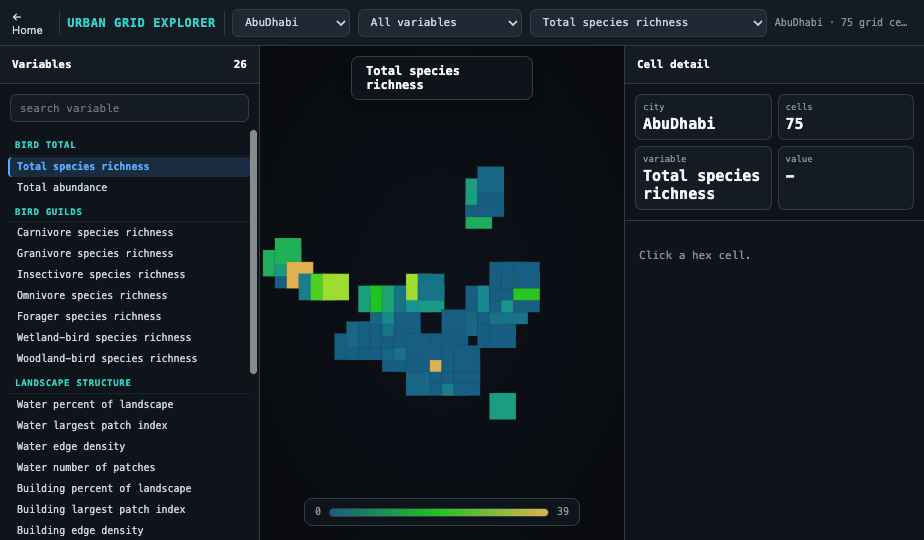

Urban Pattern Database and Explorer
The evidence is now becoming a tool. A database of urban pattern metrics for cities worldwide, with an interactive explorer for comparing landscape structure and bird biodiversity metrics city by city.

What the database holds
Every city is read on the same grid, so metrics are comparable across places rather than assembled from separate local studies. Each cell carries bird richness and abundance by feeding guild, canopy cover and height, building footprint and volume, water extent and configuration, and land-use composition.
The database is being prepared for open release, and will be made publicly available once the associated study is published, so that others can reuse it for their own urban ecology and planning work.


Each panel shows one metric across the same eighteen cities, mapped the same way and on one shared colour scale so cities can be read side by side. Together they turn scattered urban form into a comparable, reusable record: how tall and how continuous the canopy is, how much of the ground it covers and how it is interspersed, and how much built volume a city carries. This is the raw material the comparative study is built on.